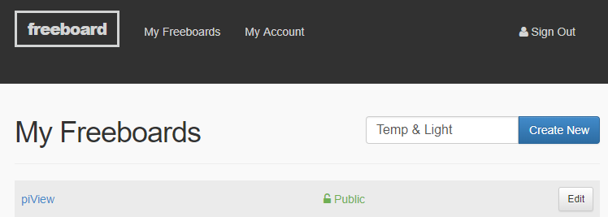
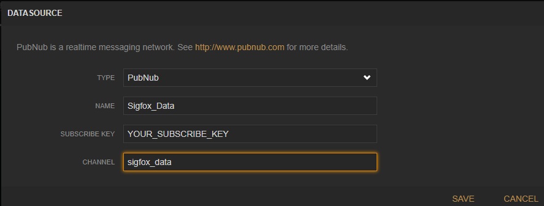
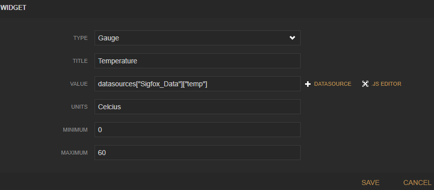
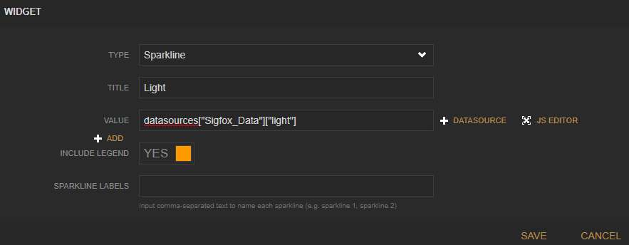
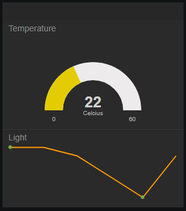

In this lab you will add publish subscribe capability to the data from the last lab.
Create an account with PubNub .
Update the contact service to publish to your PubNub publish subscribe service. Add the PubNub.js package to your service using NPM
npm install pubnub --saveIn the base folder of the project folder, create a new module called events.js and add the following code. Use your keys from the PubNub:
'use strict';
// Pubnub service configuration
// ===========================
var PubNub = require('pubnub');
var pubnub = new PubNub({
publishKey : 'YOUR_KEY',
subscribeKey : 'YOUR_KEY',
secretKey: "YOUR_KEY",
ssl: true
});
module.exports = {
publish: function(channel, message){
pubnub.publish({
channel: channel,
message: JSON.stringify(message)},
function(status, response) {
if (status.error) {
console.log(status)
} else {
console.log("message Published w/ timetoken", response.timetoken)
}
});
},
subscribe: function(channel, callback){
pubnub.addListener({
message: function(m) {
// handle message
var msg = m.message; // The Payload
callback(msg);
}
});
// Subscribe to the demo_tutorial channel
pubnub.subscribe({
channels: [channel]
});
}
}In /routes/index.js add the following code just under the mongodb initialisation.
var dataEvent = require("../events.js")Now add the following code to the callback function on creation of a contact:
dataEvent.publish('sigfox_data', req.body);Test your service using your Restful client by posting {"temp":23,"light":123}. You should see a confirmation in the console that the message has been published.
Create a new Node application that subscribes to your PubNub app and sends a confirmation mail every time a new contact event is created In the base folder of your service, create a new file called subscriber_app.js and add the following code, updating the key and domain values from your MailGun account:
var dataEvent = require('./events');
var messageHandler = function(m) {
console.log(m);
}
dataEvent.subscribe('sigfox_data', messageHandler)Now test by adding a contact via your api. Make sure to include an email field in the contact object.
Now that you have a functioning publish-subscribe service, we should create an app that can visualise/analyse the data. There are a couple of solutions available to perform IoT analytics data:
In this exercise we'll have a look at freeboard as it's simple to set up and it connects to PubNub services "out of the box".
Freeboard is a browser-based Dashboarding solution for devices and IoT data. Begin by creating an account on Freeboard.
Once you've completed registration, you can start creating dashboards.
In this case, you will create a small dashboard that displays temperature and light data published from your device. In the right hand of the screen, enter "Temp and Light" in the name box and click the New button to display the empty board. 
In Datasources, add the following datasource: 
Select the "Add Pane" and, in the pane, click "+" add a guage widget with the following settings: 
Now click "+" add a Sparkline widget with the following settings: 
Now start your Express Middleware/local tunnel server and start generating data from your device. You should start to see the data being visualised on the dash: 